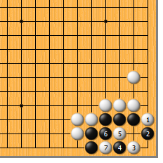
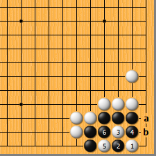
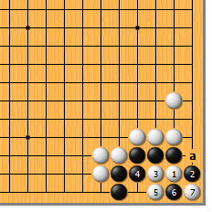
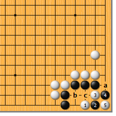
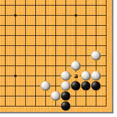
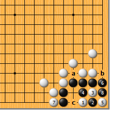

|  |  | |
| 图1 白棋有不止一种的手段。白1扳，黑2挡时，白3点，黑4只好靠住，白5、黑6成劫。黑4如于5位曲，白4位爬，黑死。
| 图2 白1直接点，次序有误。黑2靠，白3挖打时，黑有4位断的变着！白5提，黑6打吃，黑活。现在再想走白a黑b的交换，已经太晚了。 | |
|  | ||
| 图3 白1夹也是正解。黑2扳，白3爬，黑4必粘。白5曲，黑6只好扑，成劫。白如劫胜，就提在a位，味道很好。
| 图4 前图白5如于本图1位曲，黑2、白3也是劫。然而白劫胜后的味道却不如前图好。千万不要小看这一点，很多时候味道不好是要受人欺负的！ | |
|  |  | |
图5 白1直接点是第三正解。黑2靠，白3、黑4成劫。黑a位接是一个本身劫，这以后，白还要b位断或者c位团，才能继续打劫。 | 图6 如果黑a位空了一气，白先如何呢？结果仍然成劫，不过白棋的上述三种手断是不是都成立呢？大家好好地想一想……
| |
|  | 您的高见 | |
图7 白1点就不成立了。黑2仍然靠，白3时，黑4从里面断，白5提时，黑6立，白7挡，黑8打可净活。如果a位没有外气，黑6立时，白b位紧气，黑c、白7成劫。 |